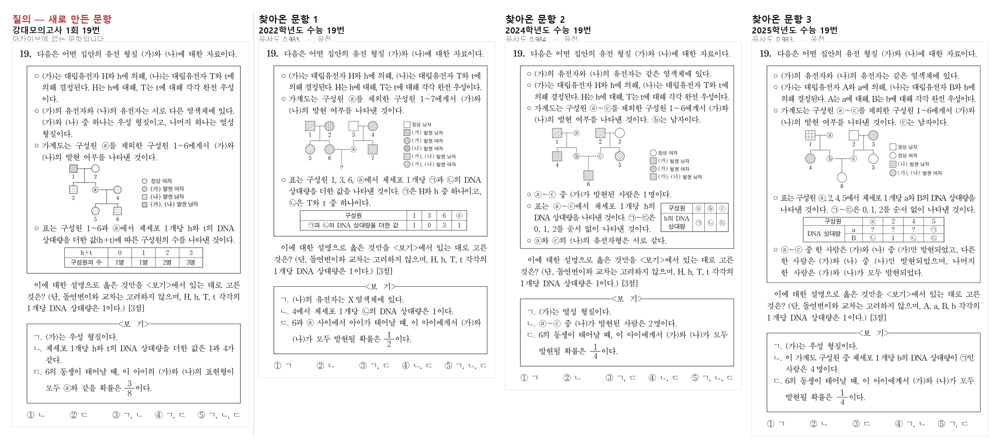

Archive
필요한 문항을, 상황에 맞는 방법으로 찾아내기
출제나 검토를 하다 보면 필요한 문항을 찾는 일에 생각보다 많은 시간이 듭니다. 작년 9월 모평에서 비슷한 문항을 본 것 같은데 어느 폴더 파일을 넣어두었는지 기억나지 않고, 파일을 열어 보면 원하던 문항이 아닙니다. 결국 또 다른 파일을 열어 문제가 어디에 있는지 찾아보게 됩니다.
문항이 없어서가 아닙니다. 평가원 기출, 교육청 학평, 강K, 수능특강까지 자료는 이미 충분히 쌓여 있습니다. 다만 쌓여 있는 것과 찾을 수 있는 것은 다릅니다. 폴더와 파일명으로 정리된 자료는 정리한 사람의 기준으로만 찾을 수 있고, 그 기준은 사람마다 다릅니다.
Archive는 흩어진 문항을 한곳에 모으고, 상황에 맞는 방법으로 찾을 수 있게 만든 문항 데이터베이스입니다. 이 글에서는 구조보다 활용에 초점을 맞춰, 실제 출제 업무에서 어떻게 쓰이는지를 중심으로 소개하겠습니다.
1. 현재 방식의 문제점
지금 필요한 문항을 찾는 방식은 대부분 개인의 기억에 의존합니다. 최근의 시험이나 직접 작업한 모의고사의 경우 어떤 시험지인지를 기억하거나, 문제지를 모아둔 파일에 문제의 키워드를 검색해서 찾는 형태입니다. 이것으로 해결되는 일도 많습니다.
하지만 출제나 검토 중에 실제로 떠오르는 질문은 이런 모양입니다.
- "삼차함수 그래프에서 접선의 개수를 묻는 문항, 최근에 뭐가 있었지?"
- "지금 만든 이 문제, 예전에 나온 것과 너무 비슷하지는 않나?"
- "이 유형으로 난이도가 높았던 문항만 모아 볼 수 없나?"
세 질문 모두 개인의 기억에 의존할 수 없습니다. 첫 번째는 내용에 대한 질문이고, 두 번째는 문항 자체를 기준으로 삼는 질문이며, 세 번째는 조건은 명확하지만 정답률 같은 정보가 문항에 붙어 있어야 답할 수 있는 질문입니다.
Archive는 사람이 자연어로 물어보는 이러한 질문들을 해석하여 질문에 맞는 문항을 불러옵니다.
2. Archive의 검색 방법
검색 방법을 미리 고를 필요는 없습니다. "작년 수능에서 접선의 개수를 묻는 문항 중에 정답률이 낮았던 것"처럼 평소 말하듯 물어보면, AI가 그 문장을 나누어 어떤 조건으로 범위를 좁히고 어떤 방식으로 찾을지를 스스로 정합니다.
위 질문이라면 '작년 수능'과 '정답률이 낮았던'은 조건으로, '접선의 개수를 묻는'은 문항 내용으로 나누어 처리합니다. 조건만으로 답할 수 있는 질문이면 조건만 쓰고, 내용까지 봐야 하면 문항을 직접 읽어 판단합니다. 문항 파일을 함께 건네면 그 문항 자체를 기준으로 삼습니다.
아래 세 가지는 그 과정에서 실제로 쓰이는 방법입니다. 하나만 쓰이는 경우보다 두세 개가 섞이는 경우가 더 많습니다. "이 문제와 비슷하면서 등비수열을 다루는, 작년 수능 문항"이라면 세 가지가 모두 동원됩니다. AI를 거치지 않고 조건을 직접 지정해 쓸 수도 있습니다.
1) 조건
가장 기본이 되는 방식입니다. 출처·시험·학년도·회차·과목·교육과정·학년으로 범위를 좁히고, 여기에 사람이 입력한 정보를 조건으로 더할 수 있습니다.
- 시험 정보 — 평가원·교육청·강대·EBS·사설 / 수능·모의평가·학력평가·강K / 학년도 · 회차
- 과목 — 국어공통·화작·언매 / 수학공통·미적·기하·확통 / 물1~지2 · 통합과목. 옛 교육과정의 가·나형, 수학A·B도 그대로 보존됩니다.
- 문항 속성 — 그림·표·수식 포함 여부는 문항을 등록할 때 자동으로 판별됩니다.
- 입력 정보 — 단원 · 키워드 · 정답 · 배점 · 정답률 · 선택률 · 난이도
"정답률 40% 이하" 같은 조건이 여기에 해당합니다. 조건은 아는 만큼만 넣으면 되고, 여러 개를 넣으면 모두 만족하는 문항만 나옵니다.
실제로 생명과학Ⅰ 기출에 걸어 본 결과입니다.
가계도 문항 11건을 꺼내 보면 이렇습니다.
| 학년도 | 문항 번호 | 단원 | 정답률 |
|---|---|---|---|
| 2026 | 19번 | 유전 | 21% |
| 2025 | 19번 | 유전 | 32% |
| 2024 | 19번 | 유전 | 38% |
| 2023 | 19번 | 유전 | 20% |
가계도 문항이 해마다 19번 자리에 놓였고 정답률이 20~38%에 머문다는 것이 조건 검색만으로 드러납니다. 파일을 하나씩 열어 보아서는 알기 어려운 종류의 정보입니다.
조건은 겹칠수록 좁아집니다. "유전 단원"만 넣으면 63건, 여기에 "정답률 35% 이하"를 더하면 18건, "25% 이하"까지 좁히면 8건이 됩니다.
2) 내용
조건으로 표현할 수 없는 것은 문장으로 물어볼 수 있습니다. 조건으로 범위를 좁힌 뒤, 그 안의 문항을 AI가 직접 읽고 요청에 가까운 순서로 정렬해 돌려줍니다. 단원이나 키워드가 입력되어 있지 않아도 문항 내용으로 판단하기 때문에, 미리 분류해 두지 않은 자료에서도 찾을 수 있습니다.
생명과학Ⅰ 200문항에 물어본 결과입니다. 200문항을 전부 읽고 고르는 데 2~3초가 걸립니다.
세 질문 모두 문항 어디에도 그 표현이 그대로 쓰여 있지 않습니다. "백신"이라는 단어가 없는 문항도 항체 형성 실험이면 올라오고, 반대로 조건에 맞지 않으면 200문항 중 3건만 남기고 나머지는 버립니다.
3) 문항
문항 자체를 넣으면 비슷한 문항을 찾아 줍니다.
문항을 이미지와 글 양쪽으로 읽어 그 특징을 하나의 숫자 묶음으로 저장해 두고, 입력한 문항과 가장 가까운 것을 찾는 방식입니다. 글로 옮기기 어려운 그래프의 모양, 도형의 배치, 지면의 구조가 이미지 쪽에, 개념과 용어가 글 쪽에 담겨 서로를 보완합니다.
실제로 넓이를 구하는 적분 문항을 넣으면 같은 유형의 문항이, 수열 문항을 넣으면 등차·등비수열 문항이 위쪽에 모입니다. 유사도가 함께 나오므로 "얼마나 비슷한지"도 함께 판단할 수 있습니다.
이미지와 글이 한자리에 들어가 있어 말로 물어도 그림 문항이 찾힙니다. "가계도로 유전자형을 추론하는 문항"이라고 적으면, 가계도 그림이 실린 문항이 올라옵니다.
아래는 실제로 돌려 본 것입니다. 아카이브에 없는 문항을 질의로 넣었습니다 — 2025학년도 강대모의고사 1회 생명과학Ⅰ 19번을 그대로 넣고, 수능 기출 10개년에서 비슷한 문항을 찾게 했습니다.

네 문항이 모두 가계도 그림과 DNA 상대량 표를 함께 제시하는 같은 구조입니다. 발문의 첫 문장까지 거의 겹칩니다. 그리고 찾아온 셋이 전부 수능 19번입니다 — 이 유형이 어느 자리에 놓이는지가 검색 결과만으로 드러납니다.
3. 사용 방안
1) 출제 및 검토 중 중복 확인
- 문항을 그대로 넣어 비슷한 기출, 시행된 문제가 있는지 확인가능합니다.
- 유사도가 높은 문항이 올라오면 발문·자료·선지 중 어디가 겹치는지 확인하고 방향을 틀 수 있습니다.
- "본 것 같은데 어디서 봤는지 기억나지 않는" 상태를 확인 가능한 절차로 바꿉니다.
2) 유형별 자료 모으기
- "정적분으로 넓이를 구하는 문항"처럼 유형을 문장으로 적어 한 번에 모을 수 있습니다.
- 여러 해에 걸친 같은 유형을 나란히 놓으면 출제 흐름과 변주 방식이 드러납니다.
- 검색 결과에서 바로 원본을 받아 HWPX로 조판하거나 이미지로 변환할 수 있습니다.
- 학년도·시험·과목을 지정해 교재에 들어갈 문항을 한 번에 추출할 수 있습니다.
3) 저작권 관리
- 저작권 침해가 의심되는 문항, 세트를 아카이브에 들어 있는 문항으로 확인 가능합니다.
- 아카이브에 수능연구소 문항들을 등록해 두면 의심 문항과의 유사도를 바탕으로 문항을 가져옵니다.
4) 난이도 참고
- 정답률과 선택률이 입력된 문항은 조건으로 걸러낼 수 있습니다.
- "이 유형에서 정답률이 낮았던 문항"을 모아 보면 어느 지점에서 어려워지는지 가늠할 수 있습니다.
- 선택률은 어떤 오답에 학생이 몰렸는지를 보여 주므로, 매력적인 오답 선지를 설계할 때 참고가 됩니다.
5) AI에게 자료 찾기를 맡기기
- Archive는 MCP를 통해 ChatGPT·Gemini·Claude에 연결됩니다.
- 대화 중에 "작년 수능에서 이 유형 문항 찾아 줘"라고 하면 AI가 직접 Archive를 검색해 옵니다.
- 찾아온 문항을 그 자리에서 변형하거나, 새 문항의 참고 자료로 이어서 쓸 수 있습니다.
4. 무엇이 담기나
Archive에는 Pipeline이 추출한 문항이 그대로 들어갑니다. 발문·자료·보기·선지가 구조를 유지한 채 저장되므로, 꺼내서 바로 HWPX로 조판하거나 이미지로 변환할 수 있습니다. 검색 결과로 받은 문항은 다시 편집 가능한 형태라는 뜻입니다.
문항 하나에는 두 종류의 정보가 붙습니다.
- 자동으로 붙는 정보 — 출처·시험·학년도·과목·교육과정, 문항 번호와 배점, 그림·표·수식 포함 여부
- 사람이 입력하는 정보 — 단원·키워드·정답·정답률·선택률·난이도·검수 상태. 국어 지문 세트에는 작품·작가·갈래·출전 같은 항목이 더해집니다.
정답률처럼 문항을 아무리 정확히 읽어도 알 수 없는 정보가 있고, 이것이 붙어 있는지에 따라 검색으로 답할 수 있는 질문의 범위가 달라집니다. 이 정보는 분석지 양식으로 한꺼번에 반영할 수 있습니다.
5. 자료를 안전하게 나누기
모든 문항을 모두에게 열 수는 없습니다. 기출은 비교적 자유롭게 쓸 수 있지만 강K 문항이나 사설 자료는 그렇지 않습니다.
Archive는 발급하는 열쇠마다 접근 범위를 다르게 줄 수 있습니다. 출처·과목·시험·학년도·회차·검수 상태를 기준으로 범위를 정하면, 그 범위 밖의 문항은 검색에도 나오지 않고 직접 번호를 알아도 열리지 않습니다.
- "2024학년도 이후 수능 기출만" 같은 범위를 이름 붙여 저장해 두고 여러 사람에게 함께 배정할 수 있습니다.
- 범위를 나중에 바꾸면 그 범위를 쓰는 모든 사람에게 곧바로 반영됩니다.
- 누가 무엇을 얼마나 호출했는지 기록이 남아, 문제가 생기면 해당 열쇠만 회수할 수 있습니다.
저작권과 공개 정책을 문서가 아니라 시스템으로 강제하기 위한 장치입니다.
6. 마무리
Archive가 하는 일은 이미 있는 자료를 의미 있게 쓸 수 있게 만드는 것입니다.
좋은 문항을 만드는 일은 여전히 사람의 몫입니다. 다만 그 과정에서 자료를 찾느라 쓰는 시간, 비슷한 문항이 있었는지 확인하지 못한 채 넘어가는 불안을 줄일 수 있습니다.
앞으로는 아카이브 문항 확장과 단원과 유형을 LLM를 통해 자동으로 분류해 검색 정확도를 높힐 예정입니다.